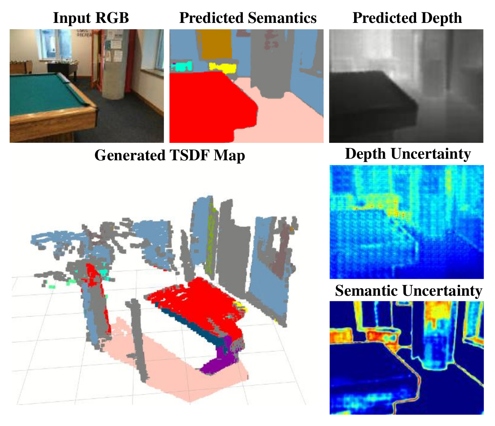
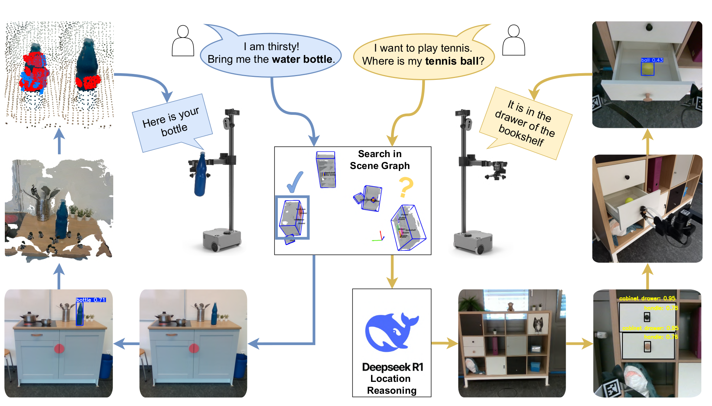
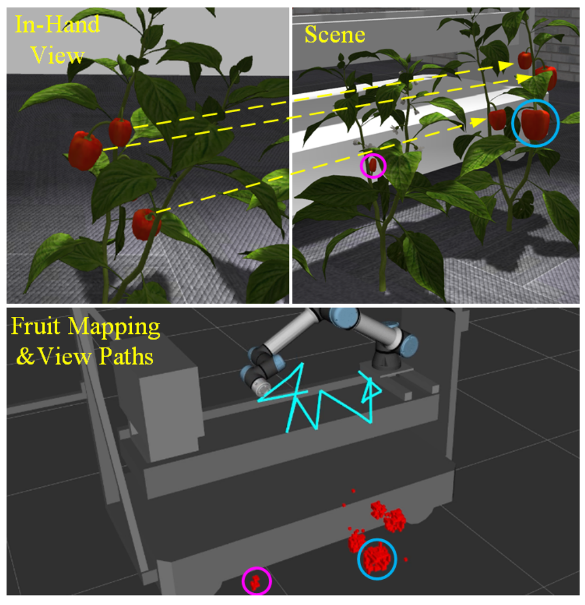

Current foundation
Sparse world models and uncertainty
Object-centric scene graphs, uncertainty-aware perception and persistent beliefs for reasoning from partial observations.
My current work studies how priors and partial observations can guide robotic perception, search and manipulation. My broader direction is to develop resource-efficient, adaptable robots for long-horizon mobile manipulation.
Object-centric scene graphs, uncertainty-aware perception and persistent beliefs for reasoning from partial observations.
Structured knowledge and prior experience that reduce the data, computation and interaction needed to learn new tasks.
Robots that update their understanding and behavior across objects, tasks and environments over long horizons.
I aim to develop robots that make efficient use of prior knowledge, limited observations and their own experience. The broader goal is adaptable mobile manipulation: systems that learn selectively, revise their understanding when needed and remain effective as objects, tasks and environments change.
O-STaR searches for relocated and concealed objects by grounding language-model priors in scene geometry and updating beliefs on a dynamic scene graph. It was validated on Stretch and in 60-day simulated scenarios; an extended version is under review at ICRA 2027.

SG-DOR uses direction-conditioned scene graphs to infer plant-part attachments and rank leaves that obstruct a pepper from a chosen approach direction. It achieved 0.73 occlusion F1 and 0.85 NDCG@3.

EvidMTL introduces evidential depth and semantic heads with a new evidential depth loss that calibrates predictive belief strength from monocular RGB. EvidKimera uses these uncertainties for consistent 3D mapping and outperformed Kimera by 30% in zero-shot ScanNetV2 semantic surface mapping accuracy and consistency.

HortiBot’s perception stack performs real-time pepper, peduncle and stem detection, online data association, and scene-graph world modelling of pepper plants. The integrated three-arm system uses active perception and dual-arm manipulation for selective harvesting of real peppers.
DawnIK expresses inverse-kinematics and collision constraints as weighted costs in a nonlinear optimizer, without requiring inverse-Jacobian computation or redundant degrees of freedom. Against CollisionIK, it produced no collisions in any evaluated multi-arm scenario and improved trajectory tracking when collision risk was low.
NBV-SC synthesizes targeted views of predicted missing fruit surfaces and rejects redundant samples using viewpoint dissimilarity. It improved fruit-size estimation and reconstruction, reduced viewpoint-sampling time by 80–90% in the harder simulated scenarios, and was demonstrated with a UR5e in a commercial glasshouse.
The system combines a dense graspability map with dynamic virtual fixtures that adapt online to the operator’s commanded motion: the user controls translation while the system orients the hand and automates grasp closure. In a SpaceMouse user study, the semi-autonomous mode reduced task-completion time and subjective workload compared with pure teleoperation.

Stretch-Compose combines spatial, semantic and geometric reasoning to retrieve relocated or concealed objects from an outdated map. Real-robot trials achieved 100% navigation and open-space detection while reducing concealed-space search time by 68%.
